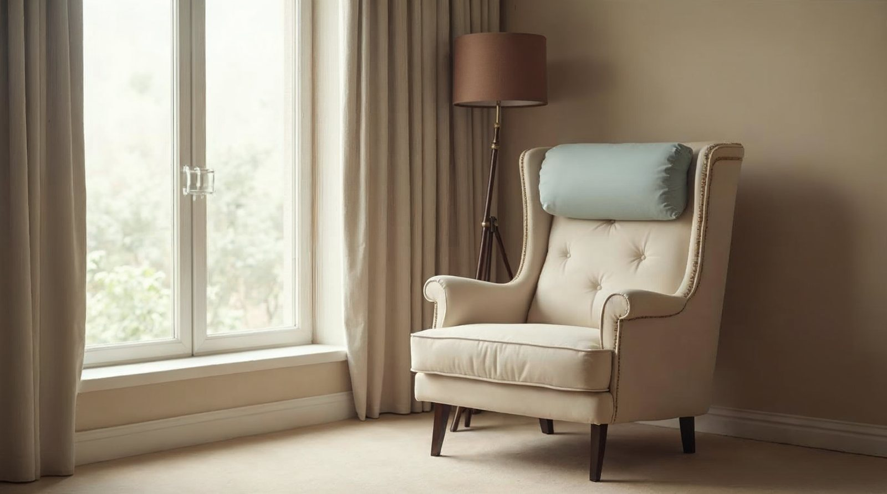
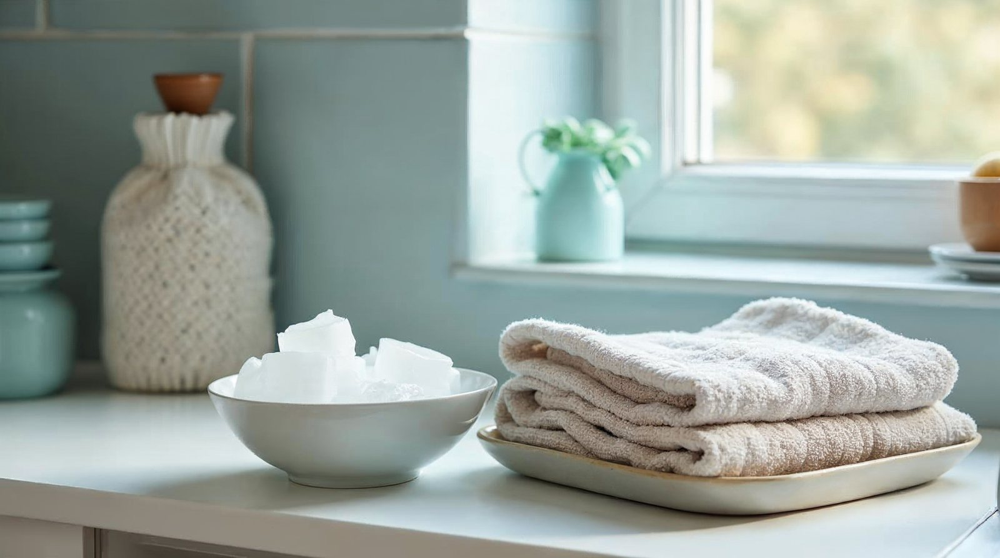
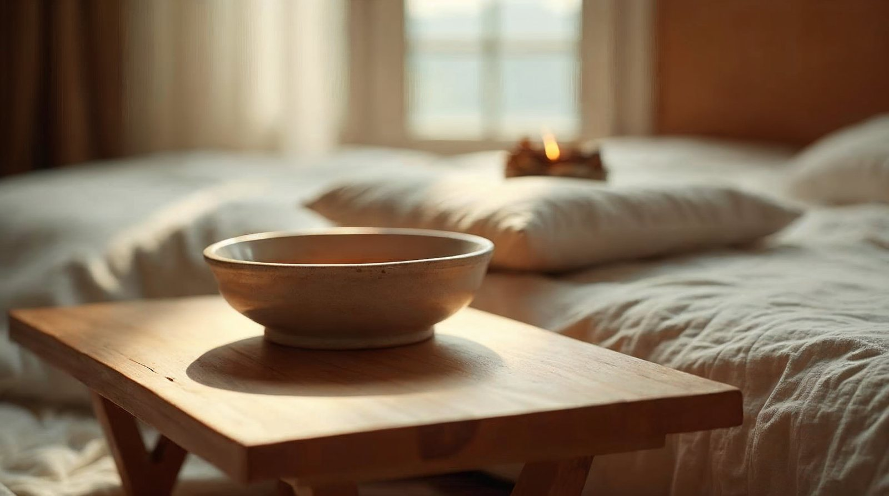
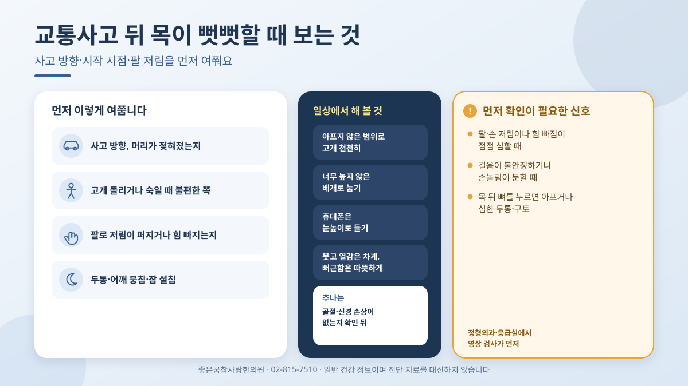

이종호 한의사 감수좋은꿈참사랑한의원 대표원장 (한의사 면허번호 19769)발행 2026-11-26 · 수정 2026-11-26
이 글의 차례
신호를 기다리다 뒤에서 받힌 다음 날 아침입니다. 알람을 끄려고 고개를 돌리는데 목이 따라오지 않습니다. 결국 어깨째, 몸통째 돌아누워서야 휴대폰에 손이 닿습니다.
세수하려고 고개를 숙이니 뒷목이 당기고, 머리 뒤쪽이 묵직하게 조여 옵니다. 어제 사고 현장에서 괜찮으냐는 물음에 괜찮다고 대답했던 일이 떠오릅니다. 그때는 정말 괜찮았으니까요.
진료실에서 이런 말씀을 자주 듣습니다. 그날은 멀쩡했는데 자고 일어나니 목이 굳어 있더라고요. 엑스레이에서 이상이 없다는데 왜 이렇게 아픈지, 이러다 목디스크가 되는 건 아닌지 걱정을 안고 오십니다.
꾀병처럼 보일까 봐 가족에게도 말을 못 하고 며칠을 참다 오시는 분도 계십니다. 그런 이야기를 들을 때면, 사고 그 자체보다 그 뒤 며칠을 혼자 견디신 시간이 더 길고 힘드셨겠구나 싶습니다.
먼저 답부터 드리겠습니다. 교통사고 뒤 목이 삔 것, 곧 경추 염좌는 목을 받치는 근육과 인대가 순간적으로 늘어나며 생기는 경우가 많고, 사고 당일보다 하루 이틀 뒤에 더 뻣뻣해지는 일이 드물지 않습니다.
팔 저림이나 힘 빠짐이 있으면 한의원보다 병원 검사가 먼저이고, 두통이 점점 심해지거나 구토가 겹치면 가까운 응급실로 가셔야 합니다. 그런 신호가 없다면 사고가 난 방향과 고개를 돌리고 숙이는 동작을 기준으로 남은 불편을 차근차근 살핍니다.
왜 사고 뒤에 목이 삐고, 며칠 뒤 더 아플까요
뒤에서 받히는 순간을 떠올려 보세요. 몸통은 의자에 실려 앞으로 밀려나는데, 무거운 머리는 잠깐 제자리에 남았다가 뒤로 젖혀지고 곧이어 앞으로 튕겨 나옵니다. 채찍이 휘듯 목이 흔들린다고 해서 편타손상, 곧 채찍질 손상이라고도 부릅니다.
그 짧은 순간, 머리 무게를 받치던 목 뒤와 앞의 근육, 뼈와 뼈를 잇는 인대가 갑자기 늘어났다가 되돌아옵니다. 겉에는 상처 하나 없어도 속에서는 꽤 큰 일이 지나간 셈이지요.
그날 안 아팠던 데에도 이유가 있습니다. 크게 놀라면 몸은 위기를 넘기는 데 온 힘을 쓰고, 바짝 긴장한 상태에서는 통증을 덜 느끼기도 합니다. 긴장이 풀리는 다음 날, 놀란 근육이 다친 자리를 지키려고 단단히 굳으면서 뻣뻣함이 오히려 더해지기도 합니다.
목의 긴장은 목에서 끝나지 않습니다. 머리를 감싸는 근육과 목 뒤 근육이 이어져 있어 뒷머리와 관자놀이가 조이듯 아프기도 하고, 어깨와 날개뼈 사이가 함께 뭉치기도 합니다. 드물게 신경이 눌리면 팔과 손으로 저림이 내려올 수 있어 이 부분은 따로 확인합니다.
- 채찍처럼 앞뒤로 흔들리며 순간적으로 늘어난 목 근육과 인대
- 다친 자리를 지키려고 하루 이틀에 걸쳐 단단해지는 주변 근육
- 목 뒤와 이어진 두피·어깨 근육의 긴장(뒷머리 두통, 어깨 뭉침)
- 드물게 팔로 내려가는 신경이 눌려 생기는 저림
사고 전의 목이 충격을 받아 냅니다
같은 정도로 받혔는데 누구는 며칠 뻐근하고 말고, 누구는 몇 주째 목이 무겁습니다. 그 순간 앉아 있던 자세, 고개를 돌리고 있었는지, 원래 목이 얼마나 지쳐 있었는지에 따라 같은 충격도 다르게 남기 때문입니다.
평소 휴대폰과 모니터를 오래 내려다보느라 머리가 앞으로 나와 있던 분이라면, 목 뒤 근육은 사고 전부터 머리 무게를 붙잡느라 쉬지 못하고 있었을 수 있습니다. 이미 지쳐 있던 근육에 충격이 더해지면 놀라는 폭도 커지기 쉽습니다.
그래서 저는 사고 이야기를 다 듣고 나면 사고 통증보다 사고 후유증을 함께 살피고 싶다고 말씀드리곤 합니다. 부딪힌 자리가 아픈 것이 통증이라면, 좀 나은 듯하다가 다시 아프고 목을 살피는 사이 어깨와 등, 허리가 차례로 불편해지는 흐름은 후유증에 가깝습니다.
젠가 놀이를 떠올려 보시면 쉽습니다. 블록을 여러 개 빼내 이미 비틀거리는 탑은 하나만 더 빼도 와르르 무너지지요. 오래 써 온 목, 이곳저곳 아팠던 몸은 그 탑과 닮아서 한 번의 충격이 한 곳에 머물지 않고 여기저기로 번지기 쉽습니다.
목이 삔 것, 곧 염좌를 저는 이렇게 비유해 말씀드립니다. 골절은 충격이 한 자리를 꿰뚫고 지나간 것이라 아픔이 그 자리에 모이지만, 염좌는 충격이 몸 안으로 들어왔다가 다 빠져나가지 못한 것과 비슷해 그 여파가 이곳저곳에서 느껴지기 쉽습니다.
뼈는 괜찮다는데 목에서 어깨, 머리까지 무거운 까닭을 이렇게 그려 보시면 조금은 이해가 되실 겁니다. 사고 전부터 목이 자주 뻐근하셨다면 그것도 알려 주세요. 사고 뒤 새로 생긴 불편과 구분하는 데 도움이 됩니다.
먼저 이렇게 여쭙니다
처음 오시면 이런 것부터 하나씩 여쭙습니다. 기억나지 않는 것은 비워 두셔도 괜찮습니다.
- 사고가 어느 방향에서 났는지, 그 순간 고개가 어느 쪽을 보고 있었는지
- 머리받침에 머리가 닿아 있었는지, 안전벨트를 매셨는지
- 목 통증이 사고 당일 시작됐는지, 다음 날이나 며칠 뒤 시작됐는지
- 고개를 돌리고 숙이고 젖힐 때 어느 방향이 가장 불편한지
- 팔로 저림이 퍼지거나 힘이 빠지는지, 두통·어지럼·잠 설침이 함께 있는지
- 병원에서 받은 검사와 진단, 처방받은 약
증상이 시작된 날을 여쭙는 데에도 이유가 있습니다. 사고처럼 부딪혀서 생긴 통증은 다친 날이 또렷해서, 그날부터 어떻게 달라져 왔는지 흐름을 그리기가 비교적 쉽습니다. 그 흐름이 다음 진료에서 무엇을 먼저 볼지 정하는 바탕이 됩니다.

예를 들어 이런 경우가 있습니다
예를 들어 신호 대기 중 뒤에서 받힌 직장인이라면, 사고 날은 회사에 나가 하루를 그냥 보냅니다. 이튿날부터 모니터를 보려고 고개를 돌리기가 힘들고, 오후가 되면 뒷머리까지 묵직해집니다. 이런 분께는 병원 검사부터 확인하고, 일하는 자세에서 어느 동작이 가장 걸리는지 함께 찾습니다.
예를 들어 버스가 급정거해 서 있던 몸이 앞으로 쏠린 경우라면, 그때 손잡이를 잡고 있었는지, 목이 앞뒤로 흔들렸는지 옆으로 꺾였는지 여쭙니다. 손잡이를 쥐고 버틴 팔과 어깨가 목보다 더 굳어 있을 때도 있어 등 위쪽까지 함께 봅니다.
예를 들어 목이 조금 덜해질 무렵부터 잠을 설치고 운전석에 앉기가 겁난다는 분도 계십니다. 통증은 가라앉는데 마음이 쉬 가라앉지 않는 경우입니다. 이런 이야기를 들으면 저는 목만큼이나 잠과 긴장 상태를 자세히 여쭙습니다.
스스로 점검해 보세요
- 사고 뒤 하루 이틀 지나 목이 더 뻣뻣해졌다
- 고개를 돌릴 때 한쪽이 특히 걸려 몸통째 돌아보게 된다
- 뒷머리나 관자놀이 쪽이 조이듯 아프다
- 어깨와 날개뼈 사이가 뭉치고 무겁다
- 베개에 누우면 목 둘 곳이 마땅치 않아 자주 뒤척인다
- 팔이나 손이 저리거나 힘이 빠지는 느낌이 있다
마지막 항목에 해당한다면 한의원보다 병원 검사가 먼저입니다. 나머지 가운데 두세 가지가 겹친다면 한 번 진료를 받아 보세요.

첫날부터 2~3주까지, 시기별로 살필 것
사고 당일부터 사흘 정도는 목이 가장 놀라 있는 때입니다. 병원 검사를 먼저 받으시고, 아픈 목을 세게 주무르거나 억지로 꺾어 소리를 내는 일은 하지 마세요. 붓거나 열감이 있으면 얇은 수건으로 감싼 얼음을 10~15분 정도 대어 보시고, 사우나와 과음은 며칠 미뤄 두세요.
처음 하루 이틀은 쉬는 게 맞습니다. 다만 위험한 신호가 없다면 내내 누워만 있기보다 집 안을 천천히 걸으며 일상을 조금씩 이어 가는 편이 나은 경우가 많습니다.
나흘째부터 일주일 남짓은 굳어 가는 목을 조금씩 풀어 주는 때입니다. 아프지 않은 범위에서 고개를 천천히 좌우로 돌리고 위아래로 끄덕여 보세요. 여기서부터 당기는구나 싶은 곳에서 멈추면 됩니다. 열감이 가라앉고 뻐근함만 남았다면 따뜻한 수건으로 목 뒤를 10분쯤 데워 보셔도 좋습니다.
2주쯤 지나면 출근도 하고 운전도 다시 하시며 일상으로 돌아가려 애쓰십니다. 그런데 이 무렵 아침에는 괜찮다가 오후만 되면 다시 뻐근하다는 말씀을 많이 듣습니다. 일하기 전과 후의 목을 비교해 보시면 무엇이 아직 부담인지 보입니다.
사고 뒤 처음 몇 주는 몸이 아직 출렁이는 때라, 목이 덜해질 무렵 어깨나 등이 새로 불편해지기도 합니다. 그래서 저는 이 무렵에는 그날그날 달라진 곳을 눈여겨보시라고 말씀드립니다. 회복되는 속도는 사람마다 달라 진료 기간이나 횟수, 결과를 미리 정해 말씀드리지는 않습니다.
진료를 받으시던 중에 출장이나 야근으로 저희 한의원에 오시기 어려울 때는 가까운 다른 의료기관을 이용하셔도 괜찮습니다. 어디서 진료받느냐보다, 불편을 혼자 참으며 미루지 않는 것이 먼저라고 생각합니다.
2주가 지나도 고개 돌리는 범위가 나아지지 않거나 두통과 어지럼, 잠 설침이 이어진다면 진료를 받아 보시길 권합니다. 꼭 그때까지 기다리실 필요는 없습니다. 일상이 불편하다면 그때가 상담하실 때입니다.
일상에서 먼저 해 볼 수 있는 것
- 병원 검사에서 급한 문제가 없다면, 하루 몇 번 당기기 직전까지만 고개를 천천히 돌리고 끄덕여 굳지 않게 하기
- 베개는 목이 꺾이지 않고 고개가 편하게 받쳐지는 높이로 맞추기
- 휴대폰은 눈높이로 들고, 모니터 위쪽을 눈높이에 맞춰 고개 숙이는 시간 줄이기
- 30~40분 앉아 있었다면 일어나 어깨를 내리고 숨을 길게 내쉬기
- 운전석 머리받침은 뒤통수 가까이 오게, 등받이는 너무 눕히지 않게 맞추기
- 무거운 물건 들기와 격한 운동은 며칠 쉬되, 걷기 같은 일상 움직임은 이어 가기
엎드려 자는 자세는 고개를 한쪽으로 오래 돌리게 되어 당분간 피하시는 편이 좋습니다. 바로 눕거나 옆으로 눕되, 옆으로 누울 때는 바로 누울 때보다 베개를 조금 높여 목이 한쪽으로 꺾이지 않게 해 주세요.
뒷머리가 조이듯 아플 때는 손가락 끝으로 두피를 원을 그리듯 1~2분 가볍게 문질러 보셔도 됩니다. 아프지 않고 시원한 정도면 충분합니다. 윗니와 아랫니가 꽉 물려 있지 않은지도 가끔 확인해 보세요. 턱에 힘이 들어가 있으면 관자놀이 쪽 긴장이 함께 올라오기 쉽습니다.

한의원에서 함께 살필 수 있는 경우
병원에서 급한 문제가 없다는 확인을 받으셨는데도 이런 불편이 남아 있다면 한의원에서 함께 살펴볼 수 있습니다.
- 목이 뻣뻣해 고개를 돌리거나 숙이기 어려운 경우
- 목 뻐근함과 함께 뒷머리 두통이나 어깨 뭉침이 이어지는 경우
- 좀 나은 듯하다가 다시 아프거나, 목에서 등·허리로 불편이 옮겨 가는 경우
- 목 통증과 함께 잠이 얕아지고 긴장이 풀리지 않는 경우
처음 오시면 이렇게 진료합니다
좋은꿈참사랑한의원에 처음 오시면 접수에서 기본 정보를 적어 주시고, 병원 검사 결과와 드시는 약 목록이 있으면 함께 내어 주세요. 진료실에서는 사고 이야기를 듣는 것부터 시작합니다. 초진은 이렇게 듣고 살피는 시간이 있어 재진보다 조금 오래 걸릴 수 있습니다.
그다음 양손을 내어 달라고 말씀드립니다. 처음 오신 분이든 다시 오신 분이든 저는 맥부터 짚고, 교통사고로 오셨다고 다르지 않습니다. 손목을 짚으며 사고 뒤 잠은 어떠신지, 밥맛과 속은 괜찮은지, 몸이 차거나 뜨겁게 느껴지지는 않는지 여쭙습니다.
목이 아파서 왔는데 왜 이런 걸 묻느냐고 하실 수 있습니다. 그래도 몸은 따로따로 움직이지 않아서, 그 대답들이 지금 무엇이 먼저인지 알려 줄 때가 많습니다. 잠을 못 자면 통증을 더 크게 느끼고, 긴장이 풀리지 않으면 소화도 무거워지니까요.
이어서 고개를 돌리고 숙이고 젖히는 동작을 함께 해 보며 어느 각도에서 걸리는지, 누르면 아픈 자리가 어디인지 봅니다. 팔다리 힘과 저림 같은 신경 증상도 확인하고, 필요하다고 판단되면 초음파로 근육 상태를 함께 봅니다. 의과 영상 검사가 먼저 필요해 보이면 그 순서를 말씀드립니다.
치료에 들어가기 전에는 오늘 무엇을 왜 하는지 먼저 말씀드립니다. 근육과 인대처럼 놀란 조직은 침과 약침으로, 관절의 정렬은 추나로 나누어 생각하고, 대개 침을 먼저 놓은 뒤 필요할 때 추나를 더하고 물리치료로 마무리합니다.
추나는 골절과 신경 손상이 없다는 확인이 된 뒤에 신중하게 정하고, 뚝 소리를 내는 것이 목표가 아닙니다. 침을 놓는 동안에는 참지 마시고 뻐근한지, 찌릿한지 느낌만 말씀해 주세요. 그 말씀에 맞춰 깊이와 방향을 조절합니다.
다시 오시면 지난번에 가장 불편했던 방향과 동작부터 이어서 여쭙습니다. 왼쪽으로 돌릴 때 당긴다고 하셨다면 다음에도 그 동작을 같이 해 보는 식입니다. 담당 원장이 다른 날에도 이전 기록을 보고 이어서 진료합니다.
평일은 저녁 8시까지, 토·일·공휴일은 오후 3시까지 진료하니 퇴근 뒤나 주말을 이용하셔도 됩니다. 자동차보험 처리 여부와 접수 방법은 상황마다 다를 수 있어 보험사 담당자에게 먼저 확인하시고, 한의원 접수에 필요한 것은 방문 전 전화(02-815-7510)로 확인해 주세요.
이렇게 기록해 오시면 상담이 쉬워집니다
- 사고 일시와 충돌 방향, 그 순간 고개 방향과 앉은 자리
- 목 통증이 시작된 날과 그 뒤의 변화(날짜별 한 줄)
- 고개를 돌리기 어려운 방향과 아픈 정도(0부터 10까지 숫자로)
- 두통이나 어지럼, 팔 저림이 있었던 날
- 병원 검사 결과지와 진단서, 드시는 약과 진통제를 드신 날
- 보험사에서 받은 접수 번호(있다면)
예를 들면 이런 식이면 충분합니다. "사고 다음 날, 고개를 왼쪽으로 돌릴 때 목 뒤 당김. 밤에 두 번 깸." "사흘째, 목은 조금 덜한데 오후 들어 뒷머리 묵직함." 이 두 줄만 있어도 다음 진료에서 무엇부터 볼지 훨씬 분명해집니다.
이런 증상은 먼저 확인이 필요합니다
- 의식을 잃었거나 사고 전후 기억이 끊긴 경우
- 두통이 점점 심해지거나 구토가 되풀이되는 경우
이런 신호가 있으면 한의원보다 가까운 병원이나 응급실을 먼저 찾으세요.
마치며
목은 하루에도 셀 수 없이 돌리고 숙이는 곳이라, 거기가 굳으면 일상의 작은 동작마다 걸립니다. 차선을 바꿀 때, 아이를 돌아볼 때, 누가 뒤에서 부를 때마다 몸째 돌아야 하니 지치실 만합니다.
서두르지 않으셔도 됩니다. 어제보다 고개가 조금 더 돌아갔는지, 오후의 뻐근함이 조금 늦게 오는지, 그런 작은 차이를 적어 두시면 몸이 따라오는 속도가 보입니다.
다음에 오시면 저는 사고가 어느 방향에서 났는지, 그리고 요즘 고개를 어느 쪽으로 돌릴 때가 가장 힘드신지부터 여쭙겠습니다.
함께 읽으면 좋은 글

여쭙는 것
- 사고가 어느 방향에서 났는지, 그 순간 고개가 어느 쪽을 보고 있었는지
- 머리받침에 머리가 닿아 있었는지, 안전벨트를 매셨는지
- 목 통증이 사고 당일 시작됐는지, 다음 날이나 며칠 뒤 시작됐는지
생활에서 해 볼 것
- 병원 검사에서 급한 문제가 없다면, 하루 몇 번 당기기 직전까지만 고개를 천천히 돌…
- 베개는 목이 꺾이지 않고 고개가 편하게 받쳐지는 높이로 맞추기
- 휴대폰은 눈높이로 들고, 모니터 위쪽을 눈높이에 맞춰 고개 숙이는 시간 줄이기
한의원에서 함께 살필 것
- 목이 뻣뻣해 고개를 돌리거나 숙이기 어려운 경우
- 목 뻐근함과 함께 뒷머리 두통이나 어깨 뭉침이 이어지는 경우
- 좀 나은 듯하다가 다시 아프거나, 목에서 등·허리로 불편이 옮겨 가는 경우
먼저 확인이 필요한 신호
- 의식을 잃었거나 사고 전후 기억이 끊긴 경우
- 두통이 점점 심해지거나 구토가 되풀이되는 경우
한눈에 보는 표
| 구분 | 핵심 |
|---|---|
| 여쭙는 것 | 사고가 어느 방향에서 났는지, 그 순간 고개가 어느 쪽을 보고 있었는지 머리받침에 머리가 닿아 있었는지, 안전벨트를 매셨는지 |
| 생활에서 해 볼 것 | 병원 검사에서 급한 문제가 없다면, 하루 몇 번 당기기 직전까지만 고개를 천천히 돌리고 끄덕여 굳지 않게 하기 베개는 목이 꺾이지 않고 고개가 편하게 받쳐지는 높이로 맞추기 |
| 한의원에서 함께 살필 것 | 목이 뻣뻣해 고개를 돌리거나 숙이기 어려운 경우 목 뻐근함과 함께 뒷머리 두통이나 어깨 뭉침이 이어지는 경우 |
| 먼저 확인이 필요한 신호 | 의식을 잃었거나 사고 전후 기억이 끊긴 경우 두통이 점점 심해지거나 구토가 되풀이되는 경우 |
자주 묻는 질문
사고 당일엔 괜찮았는데 며칠 뒤에 더 아픈 것도 흔한가요?
드물지 않습니다. 사고 당시에는 긴장해서 통증을 덜 느끼다가, 긴장이 풀리고 주변 근육이 굳으며 하루 이틀 뒤 더 뻣뻣해지는 경우가 많습니다. 사고 일시와 증상이 시작된 날을 알려 주시면 그 흐름을 함께 살핍니다.
목 보호대를 해야 하나요?
상태에 따라 다릅니다. 병원 진단 결과와 함께 판단하시고, 오래 차고 있으면 오히려 목이 굳을 수 있어 사용 기간을 처방한 의사와 상의하세요.
목이 삐었을 때 추나를 받아도 되나요?
골절과 신경 손상이 없다는 확인이 된 뒤 상태를 보고 신중하게 정합니다. 소리를 내는 것이 목표가 아니며, 불편하면 바로 말씀해 주시면 강도를 조절합니다.
찜질은 차갑게 하나요, 따뜻하게 하나요?
다친 직후 붓고 열감이 있으면 얇은 수건으로 감싼 얼음을 10~15분 정도 대어 보시고, 열감이 가라앉고 뻐근함만 남으면 따뜻하게 데워 보세요. 시원하게 풀리면 이어 가고, 욱신거림이 늘면 멈추시면 됩니다.
자동차보험으로 진료를 받을 수 있나요?
보험 처리 여부와 절차는 상황마다 다를 수 있어 보험사 담당자에게 먼저 확인해 주세요. 한의원 접수에 필요한 것은 방문 전 전화(02-815-7510)로 확인하실 수 있습니다.
좋은꿈참사랑한의원은 재진 때 지난번 이야기부터 이어서 여쭙니다. 진료시간과 예약은 오시는 길에서 확인하세요.
어디서 상담받을 수 있나요?
좋은꿈참사랑한의원은 서울 동작구 만양로2길 2 신성빌딩 3층·5층(서울 동작구 상도동, 7호선 상도역 3번 출구 근처)에 있습니다. 한의사 3명(이종호 대표원장, 조영기 수석진료원장, 정원영 진료원장)이 진료합니다. 진료시간은 평일 09:30~20:00(점심 13:00~14:00), 토·일·공휴일 09:30~15:00이며, 방문 전 전화로 확인을 권합니다. 예약은 네이버 예약, 카카오톡 상담, 전화 02-815-7510로 받습니다.
이 글은 일반적인 건강 정보이며 개인의 진단이나 치료를 대신하지 않습니다. 증상이 있거나 복용 중인 약이 있다면 진료를 통해 확인하세요. 치료 효과는 개인마다 다를 수 있습니다.
작성 기준: 일반적으로 알려져 있는 건강 정보를 참고해 정리했습니다(대표원장 감수). 증상 기록은 1~2주 동안 하루 1회, 비슷한 시간에 적어 오시면 지난 상태와 비교하기 쉽습니다.